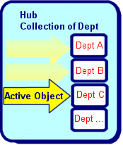

public class Hub<TYPE> extends Object implements Serializable, Cloneable, Comparable<TYPE>, Iterable<TYPE>
Observable means that will notify listeners whenever an event happens. Hub has methods to register listeners and for sending Events.
Searching
Hub has methods to find any object based on a property path and search value.
Sorting
Hub has methods for sorting/ordering of objects within the collection. The
collection is kept sorted as objects are added, inserted, or changed. A
property path can be used or a customized comparator can be used.
Manages OAObjects
Hub is used by OAObject for sending events and for managing event listeners.
Works directly with OADataSource
The Hub Class has methods to directly select objects from a
DataSource/database using an OASelect. Hubs are also set up to only
pre-fetch a certain number of objects at a time, so that response is faster.
Methods to get a total count of objects and to load all objects are also
included.
Recursive Hubs
A Hub that is recursive is where each object has children objects of the same
class. Each object has a method to get its "parent". A "Root Hub" is the top
Hub where all of the objects in it do not have a parent (value is null). Hub
and OAObject will automatically put objects in the correct Hub based on the
value of the parent. If another Object owns the Hub, then all children under
it will have a reference to the owner object.
Hub Filtering
A Hub can be created that filters objects from another Hub. see
HubFilter for more information.
XML Support
Hub has methods to work directly with OAXMLReader/Writer to read/write XML.
Serialization
Works with OAObject to handle serialization of objects to/from a stream.
Inside the Hub are the following objects:
Navigational features
The Hub Collection has methods that allow it to be navigated. This is
primarily used when using Hubs with GUI components, where the Hub acts as the
Model in MVC (Model/View/Controller) that is commonly used for building GUI
applications.
Hubs have an Active Object, which is a reference to the object in the
Hub that currently has the focus. Navigational methods in the Hub can
be used to change the active object.

Configuring Hubs to work together (the Wiring)
Hubs can be configured to form relationships and automatically work together.
This includes:
| Modifier and Type | Field and Description |
|---|---|
protected HubData |
data
Internal object used to store objects in Vector and Hashtable.
|
protected com.viaoa.hub.HubDataActive |
dataa
Internal object used store active object, bof flag, eof flag.
|
protected com.viaoa.hub.HubDataMaster |
datam
Internal object used store master object and Hub.
|
protected com.viaoa.hub.HubDataUnique |
datau
Internal object used unique information about this Hub.
|
| Constructor and Description |
|---|
Hub()
No argument constructor for creating a new Hub.
|
Hub(Class<TYPE> objClass)
Create a hub that will contain objects for a particular Class.
|
Hub(Class<TYPE> objClass,
int vecSize)
Create a hub that will contain a Class of objects.
|
Hub(Class<TYPE> objClass,
int vecSize,
int incrementSize) |
Hub(Class clazz,
OAObject masterObject) |
Hub(Class clazz,
OAObject masterObject,
OALinkInfo linkInfo,
boolean bCreateSelect)
Create a hub that will contain a Class of objects, and the Master object
for this hub is known.
|
Hub(Hub masterHub)
Create a shared hub, this is same as calling hub.getSharedHub().
|
Hub(OAObject obj)
Create a new hub with a single object, and make it AO
|
| Modifier and Type | Method and Description |
|---|---|
void |
add(Hub<TYPE> hub) |
void |
add(TYPE obj)
Add an Object to end of collection.
|
void |
addElement(TYPE obj)
Helper method that mimics Vector.addElement(), it calls Hub.add(obj,
false)
|
void |
addHubListener(HubListener<TYPE> hl)
Add a Listener to this Hub.
|
void |
addHubListener(HubListener<TYPE> hl,
boolean bActiveObjectOnly) |
void |
addHubListener(HubListener<TYPE> hl,
String property)
Add a Listener to this hub specifying a specific property name.
|
void |
addHubListener(HubListener<TYPE> hl,
String property,
boolean bActiveObjectOnly) |
void |
addHubListener(HubListener<TYPE> hl,
String property,
String dependentPropertyPath) |
void |
addHubListener(HubListener<TYPE> hl,
String property,
String[] dependentPropertyPaths) |
void |
addHubListener(HubListener<TYPE> hl,
String property,
String[] dependentPropertyPaths,
boolean bActiveObjectOnly) |
void |
addHubListener(HubListener<TYPE> hl,
String property,
String[] dependentPropertyPaths,
boolean bActiveObjectOnly,
boolean bUseBackgroundThread) |
void |
addHubListener(HubListener<TYPE> hl,
String property,
String dependentPropertyPath,
boolean bActiveObjectOnly) |
void |
addListener(HubListener<TYPE> hl) |
void |
addTriggerListener(HubListener<TYPE> hl,
String property,
String propertyPath)
add a trigger to this hub that will send a property change event.
|
void |
addTriggerListener(HubListener<TYPE> hl,
String property,
String propertyPath,
boolean useBackgroundThread) |
boolean |
canAdd() |
boolean |
canAdd(OAObject obj) |
void |
cancelSelect()
Cancel the reading of anymore records from OADataSource.
|
void |
cancelSort()
Removes/disconnects HubSorter (if any) that is keeping objects in a
sorted order.
|
boolean |
canRemove() |
boolean |
canRemove(OAObject obj) |
boolean |
canRemoveAll() |
void |
clear()
Removes all objects from this Hub.
|
Object |
clone()
Creates a new Hub with the same objects that are in this Hub.
|
int |
compareTo(Object obj) |
boolean |
contains(Object obj)
Returns true if object exists in Hub.
|
void |
copyInto(Hub h)
Copy all objects in this hub to Hub h.
|
void |
copyInto(TYPE[] anArray)
Copy objects into an array.
|
Hub<TYPE> |
createShared() |
Hub<TYPE> |
createSharedHub()
Navigational method used to create a shared version of another Hub, so
that this Hub will use the same objects as the shared hub.
|
Hub<TYPE> |
createSharedHub(boolean bShareAO)
Create a shared version of another Hub, so that this Hub will use the
same objects as the shared hub.
|
void |
deleteAll()
Delete all objects in this hub.
|
TYPE |
elementAt(int pos)
Returns object at a particular position within the Hub.
|
void |
ensureCapacity(int size)
This will set the new capacity for the Hub.
|
protected void |
finalize()
Finalize method.
|
TYPE |
find(String propertyPath,
Object findValue)
Finds first object that has a property that matches a value.
|
TYPE |
find(String propertyPath,
Object findValue,
boolean bSetAO) |
TYPE |
find(TYPE fromObject,
String propertyPath,
Object findValue) |
TYPE |
find(TYPE fromObject,
String propertyPath,
Object findValue,
boolean bSetAO) |
TYPE |
findNext(TYPE fromObject,
String propertyPath,
Object findValue) |
TYPE |
findNext(TYPE fromObject,
String propertyPath,
Object findValue,
boolean bSetAO) |
TYPE |
getActiveObject()
Navigational method used to retrieve the current active object, or null
if not set.
|
Hub |
getAddHub()
Returns the Hub that this Hub's active objects are added to.
|
TYPE |
getAO() |
TYPE |
getAt(int pos) |
boolean |
getChanged(int cascadeRule)
Returns true if the hub has changed (objects were
added/inserted/removed/replaced, or any object has been changed).
|
int |
getCurrentSize()
Number of Objects currently loaded in the collection.
|
int |
getDefaultPos()
Navigational method used to get the default position to set when a new
list is generated.
|
Hub |
getDetailHub(Class clazz)
Used to create Master/Detail relationships.
|
Hub |
getDetailHub(Class[] classes)
Used to create Master/Detail relationships.
|
Hub |
getDetailHub(Class clazz,
boolean bShareActive)
Used to create Master/Detail relationships.
|
Hub |
getDetailHub(Class clazz,
boolean bShareActive,
String selectOrder)
Used to create Master/Detail relationships.
|
Hub |
getDetailHub(Class clazz,
String selectOrder)
Used to create Master/Detail relationships.
|
Hub |
getDetailHub(String path)
Used to create Master/Detail relationships.
|
Hub |
getDetailHub(String path,
boolean bShareActive)
Used to create Master/Detail relationships.
|
Hub |
getDetailHub(String path,
boolean bShareActive,
String selectOrder)
Used to create Master/Detail relationships.
|
Hub |
getDetailHub(String path,
Class objectClass)
Used to create Master/Detail relationships.
|
Hub |
getDetailHub(String path,
Class objectClass,
boolean bShareActive)
Used to create Master/Detail relationships.
|
Hub |
getDetailHub(String path,
String selectOrder)
Used to create Master/Detail relationships.
|
boolean |
getEnabled()
Flag to know if add/remove are enabled
|
TYPE |
getLast() |
Hub |
getLinkHub(boolean bSearchOtherHubs)
Find the linkHub for this hub or any of this hub's shared hubs that have a linkHub.
|
String |
getLinkPath(boolean bSearchOtherHubs) |
Class |
getMasterClass() |
Hub |
getMasterHub()
Used to create Master/Detail relationships.
|
OAObject |
getMasterObject() |
boolean |
getNullOnRemove()
Flag used to have the active object set to null when active object is
removed from Hub.
|
OAObjectInfo |
getOAObjectInfo() |
static OAObjectInfo |
getOAObjectInfo(Class c) |
TYPE |
getObject(Object key)
Used to mimic Hashtable.get(key).
|
TYPE |
getObjectAt(int pos)
Get an object at a particular position, relative to 0
|
Class<TYPE> |
getObjectClass()
Returns the Class of the objects that are being stored in this Hub.
|
int |
getPos()
Navigational method used to set the active object to the object at
specific position.
|
int |
getPos(Object object)
Returns the position of an object within the Hub.
|
int |
getPos(Object object,
boolean bAdjustMaster) |
Object |
getProperty(String name)
Retrieve object from name/value pair.
|
Hub |
getRealHub()
If this is a shared Hub, returns the Hub that this is shared from, else
will return this Hub.
|
boolean |
getRefresh()
Flag that determines if objects are refreshed from datasource when they
become the active object (not yet implemented).
|
Hub |
getRootHub()
If this is a recursive hub with an owner, then the root hub will be
returned, else null.
|
OASelect |
getSelect()
Returns the OASelect object currently used by select().
|
OASelect |
getSelect(boolean bCreateIfNull) |
String |
getSelectOrder(Hub thisHub)
Sort Order clause to use for select.
|
String |
getSelectWhere() |
Hub<TYPE> |
getSharedHub()
Returns the Hub that this Hub is sharing objects with.
|
int |
getSize()
Number of objects currently in collection.
|
boolean |
hasDetailHubs()
Returns true if this Hub has any detail hubs created.
|
int |
indexOf(Object obj)
Finds the position of an object in this hub.
|
boolean |
insert(TYPE obj,
int pos)
Insert an Object at a position.
|
boolean |
isDeletingAll()
Used to know if all of the objects in this Hub being deleted.
|
boolean |
isLoading() |
boolean |
isMoreData() |
boolean |
isOAObject()
Returns true if this Hub's objects are a subclass of OAObject
|
boolean |
isOwned()
Returns true if this hub of objects is owned by a master object.
|
boolean |
isServer() |
boolean |
isSorted()
Returns true if this Hub has a sorter that is keeping it sorted.
|
boolean |
isValid() |
Iterator<TYPE> |
iterator() |
void |
loadAllData() |
void |
move(int posFrom,
int posTo)
Swap the positon of two different objects within the hub.
|
protected Object |
readResolve()
Used by serialization when reading objects from stream.
|
void |
remove(int pos)
This will remove the object at a position from this collection and send a
remove event to all HubListeners.
|
boolean |
remove(Object obj)
This will remove an object from this collection and send a remove event
to all HubListeners.
|
void |
removeAll()
Removes all objects from this Hub.
|
void |
removeAt(int pos) |
boolean |
removeDetailHub(Hub hub)
Used to remove Master/Detail relationships.
|
void |
removeHubListener(HubListener<TYPE> hl)
Remove a Listener to this Hub.
|
void |
removeLinkHub()
Remove the link that this Hub has with another Hub.
|
void |
removeListener(HubListener<TYPE> hl) |
void |
removeProperty(String name)
Remove name/value pair.
|
void |
resequence() |
void |
resetAO()
Navigational method that resets the current active object.
|
void |
resizeToFit()
This will set the new capacity for the Hub to the current size.
|
void |
resort()
Re-sort using last parameters from last sort or select.
|
void |
saveAll()
Save all objects in this hub.
|
void |
saveAll(int iCascadeRule) |
void |
select()
Used for retrieving all objects from OADataSource.
|
void |
select(OAObject whereObject,
String orderByClause)
Select all objects from OADataSource that have a reference to parameter
"object".
|
void |
select(OASelect select)
Used to populate Hub with objects returned from a OADataSource select.
|
void |
select(String whereClause)
Used for generating query to retrieve objects from OADataSource.
|
void |
select(String whereClause,
Object[] params) |
void |
select(String whereClause,
Object[] whereParams,
String orderBy) |
void |
select(String whereClause,
Object[] whereParams,
String orderBy,
OAFilter filter)
Used for generating query to retrieve objects from OADataSource.
|
void |
select(String whereClause,
Object whereParam,
String orderBy) |
void |
select(String whereClause,
Object whereParam,
String orderBy,
OAFilter filter) |
void |
select(String whereClause,
String orderBy)
Used for generating query to retrieve objects from OADataSource.
|
void |
select(String whereClause,
String orderBy,
OAFilter filter) |
void |
selectPassthru(String whereClause,
String orderClause)
Send the query to OADataSource.selectPassthru.
|
void |
sendRefresh()
notifies clients that hub has changed, and should be retrieved from server.
|
TYPE |
setActiveObject(int pos)
Navigational method that will set the position of the active object.
|
void |
setActiveObject(Object object)
Navigational method to set the active object.
|
void |
setAddHub(Hub addHub)
Hub used to add active object to whenever this active object is changed in
this Hub.
|
Object |
setAO(int pos) |
void |
setAO(Object object)
Navigational method that sets the current active object.
|
void |
setAutoMatch(Hub hubMaster)
Makes sure that for each object in a hubMaster, there exists an object in
this hub.
|
void |
setAutoMatch(Hub hubMaster,
boolean bServerSideonly) |
void |
setAutoMatch(String property,
Hub hubMaster)
Makes sure that for each object in a hubMaster, there exists an object in
this hub where property is equal to the hubMaster object.
|
void |
setAutoMatch(String property,
Hub hubMaster,
boolean bServerSideOnly) |
void |
setAutoSequence(String property)
Used to update a property in each object to equal/store the position
within this Hub.
|
void |
setAutoSequence(String property,
int startNumber)
Used to update a property in each object to equal/store the position
within this Hub.
|
void |
setAutoSequence(String property,
int startNumber,
boolean bKeepSeq)
Used to update a property in each object to equal/store the position
within this Hub.
|
void |
setChanged(boolean b)
Flag to know if hub has been changed.
|
void |
setDefaultPos(int pos)
Navigational method that sets the defalut position of active object when
a new list is set.
|
void |
setEnabled(boolean b) |
void |
setLink(Hub hub) |
void |
setLinkHub(Hub linkHub)
Have this Hub linked to another Hub.
|
void |
setLinkHub(Hub linkHub,
boolean bAutoCreate) |
void |
setLinkHub(Hub linkHub,
boolean bAutoCreate,
boolean bAutoCreateAllowDups)
Used to automatically create a new Object in link Hub whenever the active
object in this Hub is changed.
|
void |
setLinkHub(Hub linkHub,
String property)
Sets up this Hub so that it will automatically work with a property of
the same Class in another (link) Hub.
|
void |
setLinkHub(Hub linkHub,
String property,
boolean bAutoCreate) |
void |
setLinkHub(Hub linkHub,
String property,
boolean bAutoCreate,
boolean bAutoCreateAllowDups)
Used to automatically create a new Object in link Hub whenever the active
object in this Hub is changed.
|
void |
setLinkHub(String fromProperty,
Hub linkHub,
String toProperty)
Link/Connect a property in this hub to a property in another hub.
|
protected void |
setLinkHub(String propertyFrom,
Hub linkHub,
String propertyTo,
boolean linkPosFlag) |
void |
setLinkHubOnPos(Hub linkHub,
String property)
Set the property in a Hub to the position of the active object in this
Hub.
|
void |
setLoading(boolean b) |
void |
setMasterHub(Hub masterHub)
Used to create Master/Detail relationships.
|
void |
setMasterHub(Hub masterHub,
boolean bShared)
Used to create Master/Detail relationships.
|
void |
setMasterHub(Hub masterHub,
Class clazz,
String path,
boolean bShared,
String selectOrder)
Used to create Master/Detail relationships.
|
void |
setMasterHub(Hub masterHub,
String path)
Used to create Master/Detail relationships.
|
void |
setMasterHub(Hub masterHub,
String path,
boolean bShared)
Used to create Master/Detail relationships.
|
void |
setNullOnRemove(boolean b)
Flag used to have the active object set to null when active object is
removed from Hub (default=false).
|
TYPE |
setPos(int pos)
Navigational method used to set the active object to the object at
specific position.
|
void |
setProperty(String name,
Object obj)
Misc name/values pairs stored in this Hub.
|
void |
setRefresh(boolean b)
Flag to have Object's data refreshed from datasource whenever it is the
active object (not implemented).
|
void |
setRootHub() |
void |
setSelectOrder(String s)
Sort Order clause to use for select.
|
void |
setSelectWhere(String s)
WHERE clause to use for select.
|
void |
setSharedHub(Hub<TYPE> masterHub)
Create a shared version of another Hub, so that this Hub will use the
same objects as the shared hub.
|
void |
setSharedHub(Hub<TYPE> masterHub,
boolean bShareAO)
Create a shared version of another Hub, so that this Hub will use the
same objects as the shared hub.
|
void |
setUniqueProperty(String propertyName)
This is a property that is unique within this Hub, not other Objects in
this Hub can have the same value.
|
int |
size() |
void |
sort()
Re-sort using parameters from last sort or select.
|
void |
sort(Comparator comp)
Reorder objects in Hub using a custom Comparator.
|
void |
sort(String... propertyPaths)
Reorder objects in this Hub, sorted by the value(s) from propertyPath(s).
|
void |
sort(String propertyPaths,
boolean bAscending)
Sorts objects by propertyPath and calls hubAfterSort() method from
listeners.
|
void |
sort(String propertyPaths,
boolean bAscending,
Comparator comp)
Reorder objects in this Hub, sorted by the value(s) from propertyPath(s).
|
void |
swap(int pos1,
int pos2)
Swap the positon of two different objects within the hub.
|
Object[] |
toArray()
Copy and return an array objects.
|
TYPE[] |
toArray(TYPE[] anArray) |
String |
toString()
Returns default toString(), plus name of Object Class of the objects that
are in the collection.
|
void |
updateLinkProperty(Object obj,
Object value) |
equals, getClass, hashCode, notify, notifyAll, wait, wait, waitforEach, spliteratorprotected volatile HubData data
protected com.viaoa.hub.HubDataUnique datau
protected volatile com.viaoa.hub.HubDataActive dataa
protected com.viaoa.hub.HubDataMaster datam
public Hub()
public Hub(OAObject obj)
public Hub(Class<TYPE> objClass)
Example: Hub h = new Hub(Employee.class)
objClass - Class for the object being storedpublic Hub(Class<TYPE> objClass, int vecSize)
objClass - Class for the object being storedvecSize - initial size of vectorpublic Hub(Hub masterHub)
createSharedHub()public Hub(Class clazz, OAObject masterObject, OALinkInfo linkInfo, boolean bCreateSelect)
example: Hub(Employee.class, dept) to set up a hub of employees for a
specific department
if a dataSource exists for this hub's objects, then select() will be
called whenever the objects are referenced or by calling executeSelect()
directly.
linkInfo - from hub class to master objectpublic void ensureCapacity(int size)
public void resizeToFit()
protected Object readResolve() throws ObjectStreamException
ObjectStreamExceptionpublic void setProperty(String name, Object obj)
Used for storing additional info for hub. The property will be saved with hub on serialization.
name - of property (case insensitive)obj - value to storegetProperty(java.lang.String),
removeProperty(java.lang.String)public Object getProperty(String name)
name - of property to get. (case insensitive)
see #putProperty(String, Object)removeProperty(java.lang.String)public void removeProperty(String name)
name - of property to get. (case insensitive)
see #putProperty(String, Object)
see #getPropertypublic String toString()
public void setRefresh(boolean b)
Note: *** not yet implemented ***
getRefresh()public boolean getRefresh()
Note: *** not yet implemented ***
getRefresh()public boolean getChanged(int cascadeRule)
cascadeRule - is the rule from OAObjectpublic void setChanged(boolean b)
public void copyInto(TYPE[] anArray)
Vector.copyInto(java.lang.Object[])public Object[] toArray()
Vector.copyInto(java.lang.Object[])public void copyInto(Hub h)
public boolean isOAObject()
public Class<TYPE> getObjectClass()
protected void finalize()
throws Throwable
public boolean isMoreData()
public void loadAllData()
public int getCurrentSize()
Note: this is used to get the number of objects that are currently in the Hub. If a select needs to be executed for this hub, it will not be done when calling this method.
public int getSize()
Note: for database objects where all of the records have not been loaded, OASelect.count() will be returned. Otherwise, the returned number will be the number of objects currently in hub.
for the amount that is physcially loadedpublic int size()
public void saveAll()
Note: this will abort if any of the objects throws an exception
OAObject.save()public void saveAll(int iCascadeRule)
public void deleteAll()
Note: this does not abort if any of the objects cant be deleted.
public boolean isDeletingAll()
public Object clone() throws CloneNotSupportedException
Note: dataunique (listeners, etc.) and dataactive (active object) are not cloned. Objects are not cloned.
clone in class ObjectCloneNotSupportedExceptionpublic TYPE getObject(Object key)
key - hashkey of object to find. OAObject "hashCode()" and "equals"
is used to find matchkey - object to compare to, object or objects[] to compare this
object's objectId(s) with or OAObjectKey to compare with this
object's objectIdOAObjectKey.OAObjectKey(java.lang.String)public TYPE getObjectAt(int pos)
pos - position of object to retreive, relative to 0elementAt(int)public TYPE getAt(int pos)
public TYPE getLast()
public boolean contains(Object obj)
public int indexOf(Object obj)
public TYPE elementAt(int pos)
getObject(java.lang.Object)public TYPE getActiveObject()
setActiveObject(int)public TYPE getAO()
public TYPE setActiveObject(int pos)
pos - position to set. If > size() or < 0 then it will be set to
null, and getPos() will return -1getActiveObject()public Object setAO(int pos)
public void setActiveObject(Object object)
object - Object to make active. If it does not exist in Hub, then
active object will be set to nullgetActiveObject()public void setAO(Object object)
object - is object to make the active object.public void resetAO()
public Hub getRootHub()
public void setRootHub()
public void setAddHub(Hub addHub)
public Hub getAddHub()
setAddHub(com.viaoa.hub.Hub)public Hub getRealHub()
public boolean isOwned()
public void setUniqueProperty(String propertyName)
public void setDefaultPos(int pos)
This can be set for Detail Hubs, so that the first object is active whenever a new list is create - which is when the Master Hub changes its active object.
public int getDefaultPos()
setDefaultPos(int)public TYPE setPos(int pos)
setActiveObject(int)public int getPos()
setActiveObject(int)public int getPos(Object object)
object - Object to located. This can also be the value of the objectId
for the object to find. If the object is not found and there
is a masterObject, then the active object in the master Hub
could be changed so that the object can then be found in this
Hub.public int getPos(Object object, boolean bAdjustMaster)
public void add(TYPE obj)
If Hub is sorted, then object will be inserted at correct/sorted position.
obj - Object to add, must be from the same class that was used when
creating the Hub
return true if object was added else false (Hub.canAdd(obj) returned falsepublic boolean getEnabled()
public void setEnabled(boolean b)
public void addElement(TYPE obj)
add(Object)public void swap(int pos1,
int pos2)
pos1 - position of object to move from, if there is not an object at
this position, then no move is performed.pos2 - position of object to move to, if there is not an object at
this position, then no move is performed.move(int, int)public void move(int posFrom,
int posTo)
posFrom - position of object to move, if there is not an object at this
position, then no move is performed.posTo - the new ending position for object to be in, after the
object is removed from posFrompublic boolean insert(TYPE obj, int pos)
If Hub is sorted, then object will be inserted at correct/sorted position.
obj - Object to insert, must be from the same class that was used
when creating the Hubpos - position to insert the object into the Hub. If greater then
size of Hub, then it will be added to the end.getObjectClass(),
add(TYPE),
sort(java.util.Comparator)public boolean remove(Object obj)
public void remove(int pos)
pos - position of object to remove. If an object does not exist at
this position, then no action is taken.public void removeAt(int pos)
public void setNullOnRemove(boolean b)
b - if true, then active object will be set to null. If false,
then the active object will be set to next object. If next
object does not exist, then previous object is set.public boolean getNullOnRemove()
setNullOnRemove(boolean)public void clear()
remove(java.lang.Object)public void removeAll()
remove(java.lang.Object)public Hub<TYPE> createSharedHub()
SharedHubpublic Hub<TYPE> createSharedHub(boolean bShareAO)
bShareAO - true=use same activeObject as shared hub, false:use seperate
activeObjectSharedHubpublic void setSharedHub(Hub<TYPE> masterHub, boolean bShareAO)
masterHub - is the source Hub that this Hub will share data from.bShareAO - true=use same activeObject as shared hub, false:use seperate
activeObjectpublic void setSharedHub(Hub<TYPE> masterHub)
masterHub - is the source Hub that this Hub will share data from.public Hub<TYPE> getSharedHub()
public Hub getDetailHub(String path, boolean bShareActive, String selectOrder)
Full Description
This will create and return a Hub that will automatically be populated
with the objects from a reference property from this Hubs active object.
Whenever this Hub's active object is changed, then the Detail Hub will
have its list changed to match the objects in the reference property.
Example:
A Department Class that has a method name getEmployees() that will return
a Hub of all Employees that belong to the Department.
Hub hubDept = new Hub(Department.class); // create new Hub for Department objects
hubDept.select(); // select all departments from datasource
Hub hubEmp = hubDept.getDetail(Employee.class); // this will find the method in
// Department Class that returns
// Employee Class objects
// Or
Hub hubEmp = hubDept.getDetail("Employees"); // this will use the getEmployees()
// method in Department.
// Or
Hub hubEmp = hubDept.getDetail("Employees", "lastName, firstName"); // sets sort order
// Or any other of the getDetail() methods
This getDetail() example creates a Hub that will be populated with the
Employee objects from the current active object in the hubDept Hub. When
the active object is changed in hubDept, the hubEmp Hub will be
automatically updated by calling the new active object Department object
to get the Employee objects. A new list event will be sent to listeners
for the hubEmp whenever this happens.
Note: If the property being used for the Detail Hub is also a Hub, then the Detail Hub will call setSharedHub() to use the same objects.
same as getDetailHub()
Note: see DetailHub Class DetailHub
path - is the property path to follow to get to the object property
needed for the detail Hub.bShareActive - is used to determine if the active object for hub that is
being used (shared) is going to be the same for new Detail
Hub. (default=false). In the example above, each Department
object has a Hub of Employee Objects. If bShareActive=true,
then the Detail Hub will use the same active object as the one
in the Hub that it is sharing.selectOrder - is the sort order to select objects in.setSharedHub(com.viaoa.hub.Hub<TYPE>, boolean),
DetailHubpublic Hub getDetailHub(String path, boolean bShareActive)
public Hub getDetailHub(String path, String selectOrder)
public Hub getDetailHub(String path, Class objectClass, boolean bShareActive)
public Hub getDetailHub(String path, Class objectClass)
public Hub getDetailHub(Class clazz, boolean bShareActive, String selectOrder)
public Hub getDetailHub(Class clazz, boolean bShareActive)
public Hub getDetailHub(Class clazz, String selectOrder)
public void setMasterHub(Hub masterHub)
public void setMasterHub(Hub masterHub, boolean bShared)
public void setMasterHub(Hub masterHub, String path)
path - is the property path from masterHub to get to this hubpublic void setMasterHub(Hub masterHub, String path, boolean bShared)
path - is the property path from masterHub to get to this hubpublic void setMasterHub(Hub masterHub, Class clazz, String path, boolean bShared, String selectOrder)
public Hub getMasterHub()
public OAObject getMasterObject()
public Class getMasterClass()
public boolean hasDetailHubs()
public boolean removeDetailHub(Hub hub)
public void addHubListener(HubListener<TYPE> hl, String property)
property - name to listen forpublic void addHubListener(HubListener<TYPE> hl, String property, boolean bActiveObjectOnly)
public void addHubListener(HubListener<TYPE> hl, boolean bActiveObjectOnly)
public void addHubListener(HubListener<TYPE> hl, String property, String[] dependentPropertyPaths)
public void addHubListener(HubListener<TYPE> hl, String property, String dependentPropertyPath)
public void addHubListener(HubListener<TYPE> hl, String property, String dependentPropertyPath, boolean bActiveObjectOnly)
public void addHubListener(HubListener<TYPE> hl, String property, String[] dependentPropertyPaths, boolean bActiveObjectOnly)
public void addHubListener(HubListener<TYPE> hl, String property, String[] dependentPropertyPaths, boolean bActiveObjectOnly, boolean bUseBackgroundThread)
public void addTriggerListener(HubListener<TYPE> hl, String property, String propertyPath)
hl - listenerproperty - name of property for afterPropertyChange eventpropertyPath - to listen topublic void addTriggerListener(HubListener<TYPE> hl, String property, String propertyPath, boolean useBackgroundThread)
public void addHubListener(HubListener<TYPE> hl)
public void addListener(HubListener<TYPE> hl)
public void removeHubListener(HubListener<TYPE> hl)
public void removeListener(HubListener<TYPE> hl)
public void setAutoSequence(String property)
property - is neme of property to update.public void setAutoSequence(String property, int startNumber)
property - is neme of property to update.startNumber - is number to begin numbering at. Default is 0, which will
match the Hub position.public void resequence()
public void setAutoSequence(String property, int startNumber, boolean bKeepSeq)
property - is name of property to update.startNumber - is number to begin numbering at. Default is 0, which will
match the Hub position.bKeepSeq - , if false then seq numbers are not updated when an object is
removedpublic void setAutoMatch(String property, Hub hubMaster)
hubMaster - hub with list of objectproperty - Property in this hubs objects that match object type in
hubMasterpublic void setAutoMatch(Hub hubMaster)
hubMaster - hub with list of objectpublic void setAutoMatch(Hub hubMaster, boolean bServerSideonly)
public void sort(Comparator comp)
comp - is comparator that has callback method used to sort objects in
this Hub.public void sort(String... propertyPaths)
public void sort(String propertyPaths, boolean bAscending)
Note: a HubSorter is used to continually keep the objects sorted. To remove HubSorter, call cancelSort example: hubEmp.sort("lastName, firstName") hubEmp.sort("lastName, age desc, weight desc")
propertyPaths, - list of propertypaths, separated by comma, can also include " asc" or " desc" to override sort ordering.bAscending - true=sort ascending, false=descendingpublic void sort(String propertyPaths, boolean bAscending, Comparator comp)
see HubSorter
see #cancelSortpublic boolean isSorted()
public void cancelSort()
sort(String,boolean)public void sort()
public void resort()
public TYPE find(String propertyPath, Object findValue)
propertyPath - property to use to find valuefindValue - value to findpublic TYPE findNext(TYPE fromObject, String propertyPath, Object findValue, boolean bSetAO)
public void setSelectWhere(String s)
setSelectOrder(java.lang.String),
OASelectpublic String getSelectWhere()
public void setSelectOrder(String s)
getSelectOrder(com.viaoa.hub.Hub),
OASelectpublic String getSelectOrder(Hub thisHub)
setSelectOrder(java.lang.String),
OASelectpublic void select(OAObject whereObject, String orderByClause)
example: emp.select(dept); select all employees in Department "dept"
OASelectpublic void select()
Note: orderBy clause is blank, there will not be a sort order.
OASelectpublic void select(String whereClause)
If this hub does not have a masterObject, then it will select all objects and the supplied clause will be used for the where clause.
public void select(String whereClause, String orderBy)
empHub.select("dept.manager.name LIKE 'V%' AND order.items.product.vendor = 123")
whereClause - string used for generating SQL WHEREorderBy - string used for generating SQL ORDER BYOASelectpublic void select(String whereClause, Object[] whereParams, String orderBy, OAFilter filter)
empHub.select("dept.manager.name LIKE 'V%' AND order.items.product.vendor = 123")
whereClause - string used for generating SQL WHEREorderBy - string used for generating SQL ORDER BYOASelectpublic void select(OASelect select)
OASelect,
loadAllData(),
isMoreData()public void selectPassthru(String whereClause, String orderClause)
whereClause - is where clause in native query language used by datasource,
must start with "FROM tableName".orderClause - is sort order in native query language used by datasource.OASelectpublic OASelect getSelect()
public OASelect getSelect(boolean bCreateIfNull)
public void cancelSelect()
public Hub getLinkHub(boolean bSearchOtherHubs)
bSearchOtherHubs - also check any shared or copied/filtered hubs that use the same AOfor other optionspublic void setLinkHubOnPos(Hub linkHub, String property)
public void setLinkHub(Hub linkHub, String property)
When the active object is changed in this Hub, the property value for the link Hub will be changed to the value of the active object.
Types of linking:
1: link the active object in this Hub to a property in another Hub, where
the property type is the same Class as the objects in this Hub.
2: link the position of the active object in this Hub to a property
(numeric) in another Hub.
3: link a property in this Hub to a property in another Hub.
4: a link that will automatically create a new object in the link Hub and
set the link property whenever the active object in this Hub is changed.
Examples:
// Link department Hub to the department property in a Employee Hub
Hub hubDept = new Hub(Department.class); // create new Hub for Department objects
hubDept.select(); // select all departments from datasource
Hub hubEmp = new Hub(Employee.class);
hubEmp.select(); // select all employees from datasource
hubDept.setLink(hubEmp, "Department");
-or-
hubDept.setLink(hubEmp);
-or-
hubDept.setLink(hubEmp, Employee.class);
// Link the position of a value to a property in another Hub
Hub hub = new Hub(String.class);
hub.add("Yes");
hub.add("No");
hub.add("Maybe");
hub.setLinkOnPos(hubEmployee, "retiredStatus"); // values will be set to 0,1, or 2
// Link a the property value of active object to a property in the link Hub
Hub hub = new Hub(State.class); // Class that stores information about all 50 states
hub.select(); // select all from OADataSource
hub.setLink("stateName", hubEmp, "state"); // set the state property to name of state
// automatically create an object and set link property when active object is changed
Hub hubItem = new Hub(Item.class);
Hub hubOrder = new Hub(Order.class);
Hub hubOrderItem = hubOrder.getDetail(OrderItem.class); // create detail Hub for
// order items
hubItem.setLink(hubOrderItem, true); // whenever hubItem's active object is
// changed, a new OrderItem object will
// be created with a reference to the
// selected Item object.
<br>
@param linkHub hub that this hub will change
@param property name of property in linkHub that will get changed. If this is not
supplied,then it will be found using OAObjectInfo, OALinkInfo or ReflectionHubLinkpublic void setLinkHub(Hub linkHub)
public void setLinkHub(String fromProperty, Hub linkHub, String toProperty)
fromProperty - is property active object of this HubtoProperty - is property in link Hub to set.Full Description of Linking Hubs,
HubLinkpublic void removeLinkHub()
public void setLinkHub(Hub linkHub, boolean bAutoCreate, boolean bAutoCreateAllowDups)
bAutoCreate - if true then a new object will be created and added to
linkHub.public void setLinkHub(Hub linkHub, boolean bAutoCreate)
public void setLinkHub(Hub linkHub, String property, boolean bAutoCreate, boolean bAutoCreateAllowDups)
bAutoCreate - if true then a new object will be created and added to
linkHub.property - is name of property in link Hub that will be set.protected void setLinkHub(String propertyFrom, Hub linkHub, String propertyTo, boolean linkPosFlag)
public boolean isValid()
public String getLinkPath(boolean bSearchOtherHubs)
public static OAObjectInfo getOAObjectInfo(Class c)
public OAObjectInfo getOAObjectInfo()
public void setLink(Hub hub)
public int compareTo(Object obj)
compareTo in interface Comparable<TYPE>public boolean isServer()
public boolean canAdd()
public boolean canAdd(OAObject obj)
public boolean canRemove()
public boolean canRemove(OAObject obj)
public boolean canRemoveAll()
public void setLoading(boolean b)
public boolean isLoading()
public void sendRefresh()
Copyright © 1999–2019 ViaOA. All rights reserved.